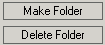

Après avoir cliqué sur le bouton Insérer Image, KTML3 ouvrira une fenêtre instantanée pour aider à la sélection de l'image désirée ou pour charger une image nouvelle sur le serveur à distance.
Survol des fichiers
La fenêtre instantanée comporte un explorateur de fichiers et une région de
configuration. L'explorateur des fichiers est utilisé pour la gestion des
fichiers et dossiers d'application à distance et pour l'accès des fichiers
et dossiers locaux. L'explorateur des fichiers affichera et permettra seulement
le chargement des types de fichiers supportés:
bmp, gif, jpeg, jpg, png, swf.
L'explorateur des fichiers comporte trois panneaux:
- le panneau supérieur qui affiche la voie courante dans l'hiérarchie du dossier à distance
- le panneau gauche, qui affiche la structure du dossier de chargements et qui comporte deux boutons: Créer
Dossier, Effacer Dossier;
 - le panneau droit, qui affiche le contenu du dossier courant et qui comporte
deux boutons: Charger
Image, Effacer
Image.

Cette structure en arbre montre seulement la structure du dossier de chargement. On peut définir le chemin vers ce dossier lorsqu'on configure KTML.
Le survol de la structure des dossiers est fait en double-cliquant sur le nom d'un dossier de l'arbre. L'explorateur affichera ensuite le contenu du dossier sélectionné (incluant d'autres dossiers, si nécessaire) dans la région droite. Lorsqu'on désire avancer à un niveau supérieur dans la structure de l'arbre, il faut double-cliquer sur l'icône avec deux points, icône qui est affichée en haut de la liste des fichiers.
Pour visualiser le contenu du dossier parent (le dossier de chargement),
il faut cliquer sur l'icône avec un point, icône qui est affichée
dans la région
droite.
Dans la région droite, les dossiers sont affichés en haut, suivis par les
images. L'explorateur affiche le nom de l'image et
un aperçu d'image.
Pour sélectionner une image, on peut cliquer soit sur l'aperçu (l'image
proprement-dite), soit sur le nom.
La région de configuration de l'image
Après avoir sélectionné l'image désirée en survolant le dossier de chargement
(ou en chargeant une image nouvelle sur le serveur à distance), on peut
définir des attributs supplémentaires pour l'image respective. Ces attributs
peuvent être configurés à partir de la région de configuration en dessous
de l'explorateur des fichiers.

- URL complet – une alternative à l'utilisation de l'explorateur des fichiers. Ce champ est rempli automatiquement lorsque vous sélectionnez un fichier;
- Texte Alternatif – ce texte sera affiché par les navigateurs web qui ne supportent pas les images. Dans les navigateurs les plus habituels, ce texte apparaît également lorsqu'on déplace le curseur par dessus de l'image;
- Alignement – indique la position de l'image par rapport aux autres éléments de la page. Les options disponibles sont: Défaut, Gauche, Droite, Haut, Milieu, Bas;
- Epaisseur de la bordure – introduisez une valeur en pixels si vous voulez afficher une bordure autour de l'image. La valeur par défaut est 0, c'est-à-dire qu'il n'y a pas de bordure.
- Largeur & Hauteur – les dimensions de l'image. Pour maintenir la taille originelle de l'image, laissez ces champs à leur valeurs par défaut. Vous pouvez redimensionner l'image plus tard, après l'avoir insérée dans la page, en la sélectionnant et en déplaçant la poignée de sélection du haut, du bas ou du côté.
Ces propriétés peuvent également être configurées
plus tard dans le panneau Configuration Image
qui est affichée lorsqu'on sélectionne l'image insérée.
Note: On peut aussi redimensionner
l'image sélectionnée à une taille supérieure à celle originelle, mais
la qualité sera visiblement détériorée.
Pour confirmer les configurations et pour insérer l'image dans la page, il faut cliquer sur le bouton OK.
Créer un nouveau dossier
On peut créer des nouveaux dossiers sur le serveur à distance, afin d'organiser
de façon plus
efficace les images chargées. Pour faire cela, il faut cliquer sur le bouton
Créer
Dossier et saisir le nom du dossier dans la fenêtre de dialogue.
Le dossier ainsi créé est inséré automatiquement dans la liste de
navigation. Pour visualiser le contenu d'un certain dossier, il faut
cliquer sur son nom dans la liste de navigation de la région gauche. Son contenu
sera affiché dans la
région droite. (La région droite est vide puisque le dossier qu'on vient de
créer ne contient
aucun fichier ou sous-dossier).
Effacer un dossier
On peut effacer un dossier existant en le sélectionnant à partir de la
liste de navigation et en cliquant sur le bouton Effacer Dossier. Une fenêtre instantanée apparaît
demandant la confirmation.
Remplacer une image
On peut remplacer une image déjà insérée par
une autre. Il faut d'abord sélectionner l'image qu'on veut remplacer
et ensuite cliquer sur le bouton Insérer Image.
Dans l'explorateur des fichiers qui est affiché, il faut cliquer
deux fois sur l'image chargée sur
le serveur. L'image qui était dans la région éditable
de KTML sera remplacée par l'image chargée.